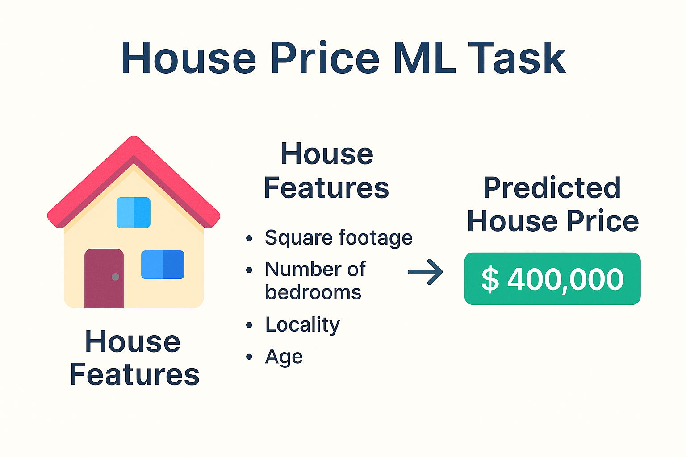
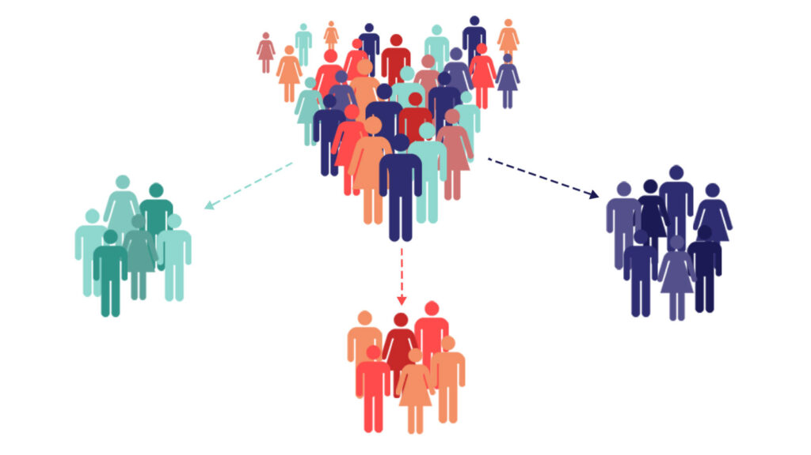
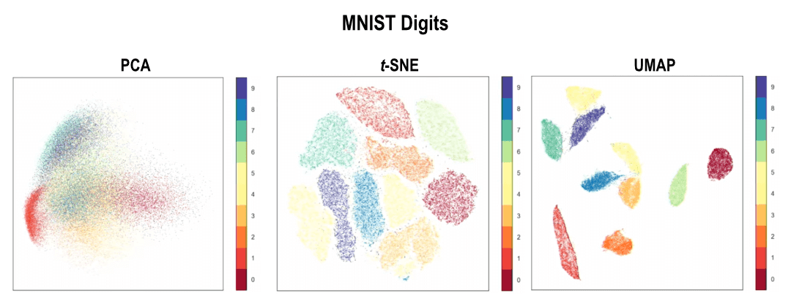

Classic ML
Практические задания по классическому машинному обучению.
-
Метрики бинарной классификации
Реализовать и интерпретировать метрики бинарной классификации. На одном примере покажи, почему Accuracy не всегда отвечает на бизнес-вопрос, а выбор порога меняет баланс между ложными срабатываниями и пропущенными положительными объектами.
Достаточно Jupyter-ноутбука или одного Python-модуля с демонстрационным скриптом. Не используй готовые функции метрик из
sklearn.metricsпри реализации:sklearnразрешён только для сверки результатов.- Контракт функций: реализуй функции для confusion matrix (
TN,FP,FN,TP), Accuracy, Precision, Recall и $F_1$. Принимай одномерныеy_true,y_predиз меток0/1; проверь одинаковую длину массивов и понятным исключением обработай недопустимые метки. - Граничные случаи: явно выбери и задокументируй поведение при нулевом знаменателе, например когда модель не предсказала ни одного положительного объекта. Рекомендуемый вариант — возвращать
0.0, какsklearnприzero_division=0, и не допускать деления на ноль. - Ручная проверка: для небольшого заранее заданного примера выпиши матрицу ошибок и вручную проверь все формулы. Добавь не менее трёх сценариев: идеальная модель, модель только с отрицательными предсказаниями и пример с FP и FN.
- Сверка: сравни результат каждой своей функции с
accuracy_score,precision_score,recall_score,f1_scoreиconfusion_matrixизsklearn.metrics; используйzero_division=0при сверке. - Вероятности и порог: прими массив
y_scoreс вероятностями положительного класса. Для порогов от 0 до 1 построй таблицуthreshold$\to$ precision/recall/$F_1$/число положительных предсказаний и выбери порог для одного сценария: медицинский скрининг, антифрод или маркетинговая акция. Объясни цену FP и FN. - Кривые: реализуй построение точек ROC и PR-кривых перебором уникальных порогов; сравни итоговые ROC AUC и Average Precision с
sklearn. Достаточно численного расчёта площадей методом трапеций; поясни, почему порядок точек важен.
- Для несбалансированных классов обязательно добавь пример, где Accuracy высока, но Recall положительного класса равен нулю.
- ROC AUC измеряет ранжирование вероятностей и не зависит от одного фиксированного порога; Precision и Recall — зависят.
Чем отличаются Precision и Recall?
Precision показывает долю настоящих положительных среди срабатываний модели, а Recall — долю найденных настоящих положительных среди всех положительных объектов.
Почему $F_1$ не всегда достаточно для выбора модели?
$F_1$ одинаково взвешивает Precision и Recall, но в конкретной задаче цена FP и FN может быть разной. Тогда порог и метрику выбирают из бизнес-риска.
Почему ROC AUC нельзя считать по бинарным предсказаниям?
Для ROC-кривой нужны score или вероятности, чтобы менять порог и ранжировать объекты. Один набор бинарных меток даёт лишь одну рабочую точку.
- Контракт функций: реализуй функции для confusion matrix (
-
Метрики многоклассовой классификации
Научиться вручную оценивать многоклассовый классификатор: строить confusion matrix, считать Precision, Recall и $F_1$ для каждого класса, а также понимать разницу между усреднениями macro, micro и weighted.
Достаточно Jupyter-ноутбука или одного Python-модуля. Реализуй формулы самостоятельно;
sklearn.metricsиспользуй только в ячейке или тесте сверки.МетрикиAccuracy Precision / Recall / $F_1$ Confusion Matrix Macro / Micro / Weighted average Balanced Accuracy- Контракт: реализуй функцию
confusion_matrix(y_true, y_pred, labels), гдеlabelsзадаёт порядок классов. Валидация должна проверять одинаковую длину массивов, уникальностьlabelsи отсутствие неизвестных классов. - One-vs-rest: по матрице ошибок для каждого класса посчитай
TP,FP,FN,TN, затем Precision, Recall, $F_1$ и support. Оформи результат в таблицу с одной строкой на класс. - Усреднения: вручную реализуй Accuracy, macro-, weighted- и micro-Precision/Recall/$F_1$, а также balanced accuracy. Покажи на данных с несбалансированными классами, почему macro и weighted могут заметно различаться; объясни, что в однолейбловой многоклассовой задаче micro-$F_1$ равен Accuracy.
- Сверка: сравни свои результаты с
confusion_matrix,classification_report,precision_recall_fscore_support,f1_scoreиbalanced_accuracy_scoreизsklearn.metrics. При нулевом знаменателе используй договорённостьzero_division=0и проверь её отдельным примером. - Интерпретация: выбери прикладной сценарий с тремя и более классами, например
Dropout/Enrolled/Graduate. По матрице ошибок объясни, какие путаницы классов наиболее рискованны и почему выбирать модель только по Accuracy нельзя. - Опционально — вероятности: для матрицы
y_scoreформы(n_samples, n_classes)рассчитай и визуализируй one-vs-rest ROC-AUC или Average Precision по каждому классу. Чётко укажи способ усреднения и почему кривые не заменяют метрики при фиксированном решении.
- Не считай категориальные ID классов числовой шкалой: классы равноправны, а порядок задаёт только аргумент
labels. - Сохрани один фиксированный набор входных массивов для демонстрации, чтобы результат можно было повторить.
Как получают метрики одного класса в многоклассовой задаче?
Этот класс временно считают положительным, а все остальные — отрицательными; затем вычисляют бинарные TP, FP, FN и TN.
Когда macro $F_1$ полезнее weighted $F_1$?
Macro $F_1$ одинаково учитывает каждый класс и лучше показывает качество для редких классов. Weighted $F_1$ отражает среднее качество с учётом размера классов.
Почему confusion matrix важнее одной итоговой метрики?
Она показывает направление ошибок: итоговое число не говорит, какие именно классы модель путает и насколько это критично.
- Контракт: реализуй функцию
-
Метрики регрессии
Реализовать и осмысленно сравнить метрики регрессии: MAE, MSE, RMSE и $R^2$. На примерах покажи, как выбросы и масштаб целевой переменной влияют на выбор метрики.
Достаточно Jupyter-ноутбука или Python-модуля. Реализацию метрик напиши без
sklearn.metrics; библиотечные функции используй только для сверки.Метрики- Контракт функций: реализуй
mae,mse,rmseиr2_scoreдля одномерных числовыхy_trueиy_pred. Проверь одинаковую длину и непустой вход; не скрывайNaNиinf, а выброси понятную ошибку или явно опиши принятую политику. - Формулы и baseline: для небольшого примера вручную покажи в таблице ошибки, абсолютные ошибки и квадраты ошибок. Для $R^2$ отдельно вычисли среднее
y_true, сумму квадратов ошибок модели и константного baseline, который всегда предсказывает среднее train-цели. - Сверка: сравни результаты с
mean_absolute_error,mean_squared_error(..., squared=False)илиroot_mean_squared_errorиr2_scoreизsklearn.metrics. Проверь идеальный прогноз, константный baseline и прогноз хуже baseline, где $R^2 < 0$. - Выбросы: создай два набора предсказаний, отличающихся одной крупной ошибкой. Сравни изменения MAE и RMSE, объясни, почему RMSE сильнее штрафует выбросы и в какой задаче это оправдано.
- Бизнес-интерпретация: выбери числовую цель, например цену жилья или время доставки. Переведи MAE и RMSE в понятные единицы цели, покажи 50-й, 90-й и 95-й перцентили абсолютной ошибки и объясни, почему среднего значения может быть мало для обещаний пользователю.
- Ограничение $R^2$: покажи, что $R^2$ безразмерен, не измеряет ошибку в единицах цели и может стать отрицательным на test. Не используй его как единственную метрику.
Почему RMSE и MAE имеют те же единицы, что и цель?
После усреднения квадратов ошибок RMSE извлекает квадратный корень, а MAE вообще не возводит ошибку в квадрат; поэтому обе метрики выражаются в единицах исходной цели.
Чем MSE отличается от RMSE?
MSE сильнее штрафует большие ошибки, но выражается в квадрате единиц цели. RMSE сохраняет это штрафование и удобнее интерпретируется.
Что означает отрицательный $R^2$ на test?
Модель ошибается сильнее, чем константный прогноз средним значением целевой переменной из train.
- Контракт функций: реализуй
-
House Prices I
Построить первую воспроизводимую модель для прогноза цены дома
SalePrice: исследовать табличные данные, собрать pipeline без утечки, сравнить линейные модели и решающее дерево, а затем объяснить качество в деньгах.
Используй House Prices: Advanced Regression Techniques. В частях I–II достаточно одного или нескольких Jupyter-ноутбуков. Для честной внутренней проверки работай с
train.csv:test.csvKaggle не содержитSalePriceи не подходит для локальной оценки. Сырые данные не коммить.МетрикиMAE RMSE $R^2$ RMSLE /log1p(SalePrice)- Постановка: предскажи
SalePriceпо характеристикам дома. СохраниIdотдельно и не используй его как признак. Разделиtrain.csvна train/holdout с фиксированнымrandom_state; holdout не используй при EDA-подборе или настройке гиперпараметров. - EDA: изучи типы столбцов, пропуски, дубликаты и распределение
SalePrice. Построй histogram/boxplot, посчитай skewness и kurtosis; проверь ключевые связи с ценой и выбросы. Все решения об удалении строк или преобразованиях обоснуй и применяй одинаково внутри честной схемы эксперимента. - Признаки: раздели числовые и категориальные признаки. В
ColumnTransformerвыполни imputation, One-Hot Encoding для номинальных категорий и масштабирование числовых признаков для линейных моделей. Никакойfitпреобразований на holdout или Kaggletest.csvдо финальной оценки. - Feature engineering: добавь минимум две осмысленные гипотезы, например общую площадь, возраст дома на момент продажи, площадь ванных/крыльца или индикаторы наличия подвала/гаража. Сравни baseline и версию с новыми признаками через CV на train.
- Модели: построй константный baseline (медиана цены), Linear Regression, минимум две регуляризованные линейные модели и DecisionTreeRegressor. Для полиномиальных признаков ограничь число исходных столбцов и объясни риск взрыва размерности.
- Оценка: на train используй
KFoldс перемешиванием и фиксированным seed. Сведи среднее и разброс CV MAE, RMSE и $R^2$ в таблицу; после выбора модели один раз оцени её на holdout. Дополнительно оцени RMSLE либо объясни, почему используешьlog1p(SalePrice). - Диагностика: нарисуй
y_trueпротивy_pred, распределение residuals и график residuals против предсказания. Найди примеры крупных ошибок и объясни, каких характеристик дома или данных модели может не хватать.
Почему preprocessing должен быть частью pipeline?
Иначе статистики заполнения, кодирование или масштабирование могут увидеть holdout/validation-данные и завысить оценку модели.
Зачем логарифмировать
SalePriceпри RMSLE-ориентированной оценке?Логарифм уменьшает влияние очень дорогих домов и делает относительные ошибки важнее абсолютных; после прогноза значение нужно корректно вернуть в исходный масштаб.
Почему низкая ошибка на train не доказывает хорошее качество?
Сложная модель может запомнить train. Обобщающую способность проверяют кросс-валидацией и независимым holdout.
- Постановка: предскажи
-
House Prices II: ансамбли и бустинг
Продолжить часть I: применить случайный лес и бустинги к тому же честному pipeline, настроить модели по кросс-валидации и сравнить их с линейными моделями по качеству, скорости и интерпретируемости.
Используй тот же House Prices, тот же split и feature policy из части I. Достаточно Jupyter-ноутбука; исходные данные и Kaggle credentials не коммить.
МоделиМетрикиMAE RMSE $R^2$ RMSLE /log1p(SalePrice)- Единый эксперимент: воспроизведи из части I preprocessing, engineered features, CV-разбиение и нетронутый holdout. Сравнение моделей должно происходить на идентичных folds; test Kaggle по-прежнему не используй как validation.
- Ансамбли: обучи RandomForestRegressor и GradientBoostingRegressor. Выбери как минимум один библиотечный бустинг — XGBoost, CatBoost или LightGBM; если используешь CatBoost, отдельно сравни нативную обработку категорий с one-hot pipeline и объясни выбор.
- Подбор параметров: для каждой основной модели определи компактное, обоснованное пространство параметров (например, число/глубина деревьев,
min_samples_leaf, learning rate, число итераций и subsampling). ИспользуйRandomizedSearchCV,GridSearchCVили Optuna только на train/CV; укажи метрику оптимизации и фиксируй seed. - Сравнение: сведи baseline и лучшие модели части I–II в таблицу: CV среднее и разброс MAE, RMSE, $R^2$, время обучения и ключевые параметры. После выбора модели вычисли метрики на holdout ровно один раз и объясни, компенсирует ли выигрыш качества усложнение модели.
- Интерпретация: построй permutation importance для финальной модели и сравни с feature importance деревьев, если оно доступно. Для категориальных one-hot признаков агрегируй важности по исходному столбцу или явно поясни, почему отдельные dummy-столбцы могут вводить в заблуждение.
- Ошибки и Kaggle: проанализируй крупные residuals финальной модели. Опционально после всех локальных решений переобучи финальный pipeline на всём
train.csv, сформируйsubmission.csvдля Kaggle и задокументируй публичный score отдельно от локальной holdout-оценки.
Почему бустинг часто превосходит одно дерево?
Бустинг последовательно добавляет деревья, исправляющие остаточные ошибки предыдущего ансамбля, и может аппроксимировать сложные нелинейные зависимости.
Почему нельзя выбирать лучшую модель по holdout много раз?
После повторных решений, основанных на holdout, он становится частью подбора и даёт оптимистичную оценку. Для выбора используют CV на train.
Зачем сравнивать качество с временем и сложностью?
Небольшой выигрыш метрики может не оправдать медленное обучение, тяжёлую эксплуатацию и более слабую объяснимость модели.
-
Customer Segmentation
Провести полный unsupervised-анализ клиентских данных: выделить сегменты, сравнить алгоритмы кластеризации и превратить математические кластеры в проверяемые бизнес-гипотезы. Кластер — не готовое решение о клиенте, а отправная точка для дальнейшей проверки.

Используй Mall Customers либо другой открытый набор данных о поведении клиентов с явной ссылкой и описанием полей. Достаточно Jupyter-ноутбука; исходные данные не коммить.
Для основного эксперимента зафиксируй один набор признаков, например возраст, доход и spending score. Если добавляешь другие признаки, объясни, почему они доступны и не являются ID клиента или следствием будущей маркетинговой кампании.
- Постановка и EDA: сформулируй, какие решения может поддержать сегментация: коммуникация, ассортимент, программа лояльности. Проверь размер данных, пропуски, дубликаты и типы признаков; построй распределения, pairplot и корреляции. Исключи идентификаторы и обоснуй обработку выбросов.
- Подготовка: сформируй
Xтолько из выбранных числовых признаков. Сравни результат без масштабирования и послеStandardScaler; основной эксперимент проводи на масштабированных данных, потому что большинство алгоритмов опирается на расстояния. - KMeans: исследуй несколько значений $k$ (например, 2–8) с фиксированным
random_stateи несколькими инициализациями. Построй inertia/elbow, Silhouette и таблицу размеров кластеров; выбери $k$, не опираясь только на одну кривую. - Сравнение алгоритмов: на одном и том же
Xзапусти минимум KMeans, один плотностный метод (DBSCAN или HDBSCAN) и иерархическую кластеризацию. KMedoids и Spectral Clustering — расширение. Для DBSCAN/HDBSCAN обоснуйeps/min_samplesилиmin_cluster_size, отдельно посчитай и визуализируй шумовые точки с меткой-1. - Оценка: рассчитай Silhouette, Calinski–Harabasz и Davies–Bouldin только когда есть минимум два непустых не-шумовых кластера; укажи, какие точки исключались из расчёта и почему. Сведи параметры, число кластеров, долю шума, размеры сегментов и метрики в одну таблицу.
- Визуализация: спроецируй те же признаки в 2D через PCA и нарисуй результаты всех основных алгоритмов в одинаковой палитре и масштабе осей. Для иерархического метода добавь дендрограмму. Не утверждай, что два далеко расположенных кластера в t-SNE/UMAP обязательно далеки в исходном пространстве.
- Профили сегментов: построй таблицу медиан/средних и размера каждого сегмента в исходных единицах. Дай сегментам нейтральные названия, сформулируй для каждого гипотезу и способ офлайн- или A/B-проверки. Не назначай клиенту жёсткую стратегию только по кластеру.
Почему масштабирование критично для KMeans и DBSCAN?
Эти методы используют расстояния: признак с большим масштабом доминирует над остальными и искусственно задаёт форму кластеров.
Почему Silhouette нельзя считать абсолютным доказательством хорошей сегментации?
Метрика предпочитает компактные и разделённые сферические группы, но не проверяет бизнес-полезность, устойчивость результата и корректность выбранных признаков.
Чем плотностные методы отличаются от KMeans?
KMeans заранее требует число кластеров и распределяет все точки, а DBSCAN/HDBSCAN могут находить кластеры сложной формы и помечать редкие точки шумом.
-
Визуализация данных через PCA, t-SNE, UMAP
Научиться использовать PCA, t-SNE и UMAP для исследовательской визуализации: отделять надёжные выводы о данных от артефактов проекции и честно сравнивать методы на одном наборе объектов.

PCA, t-SNE, UMAP Используй один датасет во всех экспериментах: рекомендуемый вариант — Digits, потому что 64 признака и известные метки позволяют проверить картинку. Можно взять Iris или данные из задачи классификации/кластеризации, но опиши размерность, смысл признаков и источник.
Достаточно Jupyter-ноутбука. Метки классов разрешены только для раскраски и оценки визуализации после обучения; не передавай их методам снижения размерности.
- Подготовка: проведи короткий EDA: размер
X, пропуски, диапазоны и распределение классов/кластеров. Объясни, нужны лиStandardScalerи почему для выбранного набора. Сделай preprocessing один раз и используй одинаковыйXво всех трёх методах. - PCA: построй 2D-проекцию и scatter plot, раскрасив точки известными метками. Покажи
explained_variance_ratio_первых компонент и cumulative explained variance для большего числа компонент. Интерпретируй, сколько информации линейная 2D-проекция сохраняет и чего по ней утверждать нельзя. - t-SNE: фиксируй
random_state, выбери разумныеinitи число итераций. Сравни минимум три значенияperplexity(например, 5, 30, 50) при одинаковых данных; выпиши время работы и наблюдения. Учитывай ограничение:perplexity < n_samples. - UMAP: фиксируй
random_state, сравни минимум две комбинацииn_neighborsиmin_dist; отрази изменения локальной плотности и разделимости групп. Укажи версиюumap-learn, потому что результат и параметры зависят от реализации. - Сопоставление: расположи PCA, t-SNE и UMAP в одной фигуре с одинаковой палитрой меток и чёткими подписями осей. Сведи в таблицу параметры, время, наблюдаемую локальную/глобальную структуру и ограничения интерпретации.
- Проверка устойчивости: повтори t-SNE и UMAP хотя бы с ещё одним seed. Сравни не абсолютные координаты, а соседства и устойчивость крупных групп; объясни, почему поворот, отражение или сдвиг вложения не меняют его смысла.
- Связь с моделями: при наличии меток обучи простой классификатор в исходном пространстве и отдельно на 2D PCA. Сравни качество, не обучая финальный классификатор на t-SNE-вложении. Объясни, что красивая визуализация не гарантирует улучшения предсказательной модели.
- PCA — параметрическое линейное преобразование: на новых объектах доступен
transform. - t-SNE в
scikit-learnпрежде всего предназначен для визуализации обучающей выборки; не используй его как универсальный preprocessing для production-инференса. - UMAP может преобразовывать новые точки, но это не отменяет проверку качества и временной доступности признаков.
Почему в t-SNE нельзя интерпретировать расстояния между удалёнными группами как исходные?
t-SNE главным образом сохраняет локальные соседства. Глобальное расположение кластеров и расстояния между ними могут быть артефактом оптимизации.
Что показывает explained variance ratio в PCA?
Это доля вариации исходных данных, объяснённая каждой главной компонентой; она не равна качеству классификации и не гарантирует разделимость классов.
Зачем фиксировать seed при сравнении вложений?
t-SNE и UMAP используют случайность. Зафиксированный seed делает конкретный эксперимент воспроизводимым, а проверка нескольких seed показывает его устойчивость.
- Подготовка: проведи короткий EDA: размер
-
Конверсия в интернет-магазине I
Научиться решать прикладную задачу бинарной классификации на смешанных табличных данных: по поведению посетителя интернет-магазина предсказать, завершится ли текущая сессия покупкой (
Revenue).Используй Online Shoppers Purchasing Intention Dataset от UCI: 12 330 сессий, 17 признаков и бинарная цель
Revenue. Покупкой заканчиваются только 1 908 сессий (около 15,5%), поэтому одной Accuracy для выбора модели недостаточно.В частях I–II достаточно одного или нескольких Jupyter-ноутбуков (
.ipynb). Отдельный проект понадобится только в части III. Все три части можно вести в одном репозитории, сохраняя результат каждой на отдельной ветке:clf/online_shoppers/part_1,clf/online_shoppers/part_2,clf/online_shoppers/part_3. Сырые данные не коммить в репозиторий: скачай их по официальной ссылке или загружай программно.МоделиМетрикиPR-AUC / Average Precision Precision / Recall $F_1$-score ROC AUC Confusion Matrix- Постановка: зафиксируй момент принятия решения — модель должна оценивать вероятность покупки во время визита, чтобы маркетинг мог показать посетителю дополнительный стимул. Цель —
Revenue. - EDA: изучи размеры таблицы, типы и диапазоны признаков, пропуски, дубликаты и распределение классов. Отдельно покажи числовые и категориальные признаки и объясни, почему дисбаланс делает Accuracy недостаточной.
- Разделение и подготовка: сделай стратифицированный train/test split с фиксированным
random_state. СобериPipeline/ColumnTransformer: все обучаемые преобразования, включая заполнение пропусков, кодирование категорий и масштабирование для логистической регрессии, настраиваются только на train. - Базовые модели: обучи логистическую регрессию и решающее дерево. Сведи результаты на test в таблицу: PR-AUC, ROC AUC, precision, recall, $F_1$ и confusion matrix.
- Выбор: выбери основную метрику PR-AUC и объясни выбор финальной модели не только числом, но и компромиссом между тем, скольких потенциальных покупателей она находит и скольким посетителям будет показана лишняя акция.
PageValuesи утечка: в финальный real-time набор признаковPageValuesне включай. Объясни, что значение формируется из ценности страниц и достижения целевой страницы в сессии, поэтому в момент показа стимула может зависеть от информации, появляющейся позднее, и быть прокси таргета. Можно выполнить отдельное диагностическое сравнение на validation/OOF-предсказаниях сPageValuesи без него, но не выбирай по версии с этим признаком финальную модель и не используй её для честной test-оценки.
- Построй PR-кривую и ROC-кривую для логистической регрессии и дерева на одном графике.
- Зафиксируй в выводах, какие признаки доступны в момент скоринга, а какие появляются только после дальнейших действий пользователя.
Почему PR-AUC здесь информативнее Accuracy?
При редком положительном классе модель, всегда предсказывающая отсутствие покупки, получит высокую Accuracy, но не найдёт ни одного покупателя. PR-AUC показывает соотношение precision и recall именно для покупок.
Зачем нужен стратифицированный split?
Он сохраняет близкую долю покупок в train и test, поэтому оценка модели не искажается случайным перекосом классов.
Почему
PageValuesнельзя использовать для real-time предсказания?Этот признак связан с ценностью страниц и достижением цели внутри сессии. Если на момент скоринга эта информация ещё не сформирована, её использование создаёт временную утечку и завышает offline-метрики.
- Постановка: зафиксируй момент принятия решения — модель должна оценивать вероятность покупки во время визита, чтобы маркетинг мог показать посетителю дополнительный стимул. Цель —
-
Конверсия в интернет-магазине II: ансамбли
Продолжить часть I: добавить ансамбли, настроить их без утечки test-данных и сравнить с baseline, логистической регрессией и одиночным деревом.
Используй тот же датасет UCI, ту же business-постановку и тот же временно безопасный набор признаков.
PageValuesостаётся исключённым из всех финальных pipeline.Достаточно Jupyter-ноутбука. Продолжай тот же репозиторий из части I на ветке
clf/online_shoppers/part_2; результат части I сохраняй наclf/online_shoppers/part_1, а требования проекта из части III будут добавлены наclf/online_shoppers/part_3.pyproject.tomlи тесты пока не требуются.МоделиМетрикиPR-AUC / Average Precision Precision / Recall $F_1$-score ROC AUC Confusion Matrix- Единый эксперимент: воспроизведи безопасную подготовку данных из части I. Оставь test нетронутым до финальной оценки; все преобразования и подбор параметров должны жить внутри pipeline, который обучается только на train.
- Ансамбли и бустинги: обучи
RandomForestClassifier, градиентный бустинг и минимум один библиотечный бустинг: XGBoost, LightGBM или CatBoost. Для CatBoost отдельно объясни, используешь ли нативную обработку категориальных признаков или общий one-hot pipeline. Подбери значимые гиперпараметры черезStratifiedKFoldиGridSearchCVлибоRandomizedSearchCV; обоснуй поисковое пространство и не подбирай параметры по test. - Сравнение: добавь результаты моделей из части I и новых ансамблей в одну таблицу. Для каждой модели покажи среднюю CV-оценку на train и единственную итоговую оценку на test по PR-AUC, ROC AUC, precision, recall и $F_1$.
- Визуализация и интерпретация: нарисуй ROC- и PR-кривые на общих графиках, а также важность признаков для ансамблей. Если для сравнения важности используешь разные модели, поясни различие между встроенной и permutation importance.
- Бизнес-решение: выбери финальную модель по PR-AUC и объясни, чем она лучше для поиска посетителей, которым стоит предложить скидку или иной стимул. Отдельно опиши, почему версия с
PageValues, даже при более высокой offline-оценке, не является допустимой моделью для real-time сценария.
Зачем нужна кросс-валидация, если уже есть test?
Кросс-валидация на train помогает сравнить настройки и модели устойчивее, а test остаётся независимой однократной проверкой выбранного решения.
В чём разница между случайным лесом и градиентным бустингом?
Случайный лес обучает много независимых деревьев и усредняет их, снижая дисперсию. Бустинг последовательно исправляет ошибки предыдущих деревьев и обычно сильнее зависит от настройки.
Почему важность признака не доказывает причинную связь?
Важность показывает вклад в предсказания на имеющихся данных; она может отражать корреляции, прокси-признаки и особенности сбора данных, а не причинное влияние.
-
Конверсия в интернет-магазине III: воспроизводимый проект
Оформить решение из первых двух частей как самостоятельный ML-проект, добавить SVM и Naive Bayes и доказать, что эксперимент воспроизводим и не использует признаки с временной утечкой.
Оформи решение в репозитории
online-shoppers-classification/сsrc/,notebooks/,tests/,README.md,pyproject.toml,uv.lockи.gitignore. Можно вести все части в этом одном репозитории: результаты I–III должны быть доступны соответственно на веткахclf/online_shoppers/part_1,clf/online_shoppers/part_2,clf/online_shoppers/part_3. Исходные данные не коммить: код должен либо скачивать их по официальной ссылке UCI, либо принимать путь к скачанному файлу.Зафиксируй в коде feature policy: для real-time сценария
PageValuesисключается до обучения и инференса.МоделиSVC Naive Bayes Logistic Regression Decision Tree Random Forest Gradient Boosting XGBoost LightGBM CatBoostИнструментыuvruffpytestscikit-learn- Структура и запуск: вынеси загрузку данных, подготовку признаков, обучение, оценку и построение графиков из ноутбука в переиспользуемые модули
src/. Добавь CLI или скрипт обучения с фиксированным seed и сохраняй таблицу результатов/графики в игнорируемую папку артефактов. - Новые модели: добавь SVM минимум с линейным и RBF-ядром; другие ядра (
poly,sigmoid) можно включить в сравнение. Добавь подходящий вариант Naive Bayes и обоснуй, как его предположения соотносятся с числовыми и one-hot-кодированными признаками. - Честное сравнение: сравни SVM и Naive Bayes с логистической регрессией, деревом, случайным лесом, градиентным бустингом, XGBoost, LightGBM и CatBoost из частей I–II на одной фиксированной схеме split/CV и одних метриках. Финальную модель выбирай по PR-AUC на безопасном наборе признаков; test используй только после выбора.
- Тесты: unit-тестами проверь загрузку/валидацию схемы, исключение
PageValues, отсутствие target в списке признаков и возможность обучить pipeline на небольшом фиктивном наборе данных. Тесты не должны требовать сети или скачивания датасета. - Документация: в
README.mdопиши источник и лицензию данных, установку черезuv, команды запуска, структуру проекта, метрики и результаты. Явно зафиксируй ограничение:PageValuesнельзя применять для real-time предсказания из-за доступности признака во времени и риска target leakage. - Качество кода: на чистой машине должны проходить
uv sync,uv run ruff check .,uv run ruff format --check .иuv run pytest.
Почему SVM необходимо масштабирование признаков?
Расстояния и скалярные произведения в SVM чувствительны к масштабу: признаки с большими числовыми значениями иначе будут непропорционально влиять на границу решения.
Какой риск несёт Naive Bayes на этих данных?
Наивный байесовский классификатор предполагает условную независимость признаков при известном классе. Поведение пользователя и признаки страниц коррелируют, поэтому предположение может нарушаться, хотя модель остаётся полезной как быстрая вероятностная baseline-модель.
Что делает эксперимент воспроизводимым?
Зафиксированные зависимости, seed, версия и источник данных, код pipeline, команды запуска и автоматические тесты позволяют другому человеку повторить обучение и проверку.
- Структура и запуск: вынеси загрузку данных, подготовку признаков, обучение, оценку и построение графиков из ноутбука в переиспользуемые модули
-
Раннее выявление риска отчисления I
Решить задачу многоклассовой классификации: по информации о студенте, известной при поступлении, предсказать один из исходов обучения —
Dropout,EnrolledилиGraduate— и понять, кому стоит предложить раннюю поддержку.Используй Predict Students' Dropout and Academic Success от UCI: 4 424 записи, 36 признаков смешанного типа и три несбалансированных класса цели
Target.В частях I–II достаточно Jupyter-ноутбука. Все три части можно вести в одном репозитории, сохраняя результат каждой на отдельной ветке:
clf/students_dropout/part_1,clf/students_dropout/part_2,clf/students_dropout/part_3. Для этой задачи точка предсказания — момент поступления: в модель можно включать только признаки, которые уже известны тогда. Сырые данные не коммить в репозиторий.МоделиМетрикиMacro $F_1$-score Weighted $F_1$-score Precision / Recall / $F_1$ по классам Balanced Accuracy Confusion Matrix- Временная граница: составь allowlist признаков по документации UCI. Все показатели
Curricular units 1st sem ...иCurricular units 2nd sem ...исключи: они появляются после поступления и для раннего прогноза являются будущей информацией. Зафиксируй этот список и его обоснование в ноутбуке. - EDA: изучи размеры и типы данных, распределение классов
Dropout/Enrolled/Graduate, пропуски, дубликаты и возможные категориальные коды, записанные числами. Объясни, почему надо смотреть на качество по каждому классу, а не только на Accuracy. - Подготовка: сделай стратифицированный train/test split с фиксированным
random_state. Построй pipeline, в котором кодирование категориальных признаков, масштабирование числовых и другие обучаемые преобразования fitятся только на train. - Модели: обучи многоклассовую логистическую регрессию и решающее дерево. Для каждой модели выведи classification report, balanced accuracy и confusion matrix.
- Сравнение: сведи результаты в таблицу и выбери модель главным образом по macro $F_1$. Объясни, что значит ошибка
Dropout$\leftrightarrow$Graduateи как результаты могут использоваться для приглашения студента на консультацию, а не для автоматического наказания или отказа.
- Не превращай коды категорий в непрерывные величины без проверки их смысла в документации датасета.
- Можно дополнительно показать многоклассовый ROC-AUC в схеме one-vs-rest, но он не заменяет метрики по каждому классу.
Почему macro $F_1$ выбирают основной метрикой при дисбалансе?
Macro $F_1$ одинаково учитывает каждый класс, поэтому доминирующий класс не скрывает низкое качество для
DropoutилиEnrolled.Почему семестровые оценки здесь являются утечкой?
На момент поступления результатов первого и второго семестров ещё нет. Использование таких столбцов даёт модели будущую информацию и не позволяет воспроизвести результат при реальном раннем скоринге.
Чем balanced accuracy отличается от обычной Accuracy?
Balanced accuracy усредняет recall по классам и не позволяет частому классу непропорционально увеличить итоговую оценку.
- Временная граница: составь allowlist признаков по документации UCI. Все показатели
-
Раннее выявление риска отчисления II: ансамбли
Продолжить часть I: добавить ансамбли, настроить их по стратифицированной кросс-валидации и сравнить с базовыми моделями в сценарии раннего выявления риска.
Используй тот же датасет UCI и allowlist признаков на момент поступления из части I. Семестровые результаты запрещены и в этой части.
Достаточно Jupyter-ноутбука. Продолжай тот же репозиторий из части I на ветке
clf/students_dropout/part_2; результат части I сохраняй наclf/students_dropout/part_1, а требования проекта из части III будут добавлены наclf/students_dropout/part_3.МоделиМетрикиMacro $F_1$-score Weighted $F_1$-score Precision / Recall / $F_1$ по классам Balanced Accuracy Confusion Matrix- Единая схема эксперимента: оставь test-набор для финальной проверки. На train проведи
StratifiedKFold; подготовка признаков должна быть частью pipeline, чтобы преобразования не видели validation-fold. - Ансамбли и бустинги: обучи случайный лес, градиентный бустинг и минимум один библиотечный бустинг: XGBoost, LightGBM или CatBoost. Для CatBoost отдельно объясни, используешь ли нативную работу с категориальными признаками или общий one-hot pipeline. Подбери ключевые гиперпараметры через
GridSearchCVилиRandomizedSearchCV, обоснуй диапазоны поиска и укажи, по какой метрике происходит refit. - Сравнение: для baseline, логистической регрессии, дерева и ансамблей покажи среднее и разброс CV macro $F_1$, затем одну финальную test-оценку. Добавь classification report, weighted $F_1$, balanced accuracy и confusion matrix лучшей модели.
- Анализ ошибок: разберись, какие классы чаще путаются и какие признаки наиболее важны для ансамблей. Не интерпретируй важность как причинность и не делай выводов о человеке по одной модели.
- Решение: выбери модель для предложения ранней поддержки. Объясни, почему для этой цели риск пропустить будущий
Dropoutи риск ошибочно отнести студента к группе риска требуют анализа precision и recall именно этого класса.
Почему при подборе параметров нужен
StratifiedKFold?Каждый fold сохраняет доли классов, поэтому macro $F_1$ для редких классов оценивается стабильнее.
Зачем показывать и macro, и weighted $F_1$?
Macro $F_1$ одинаково взвешивает классы, а weighted $F_1$ учитывает их размер. Их расхождение показывает, не улучшилось ли качество только за счёт частого класса.
Почему нельзя подбирать гиперпараметры по test-набору?
Тогда test становится частью процесса выбора и перестаёт быть независимой оценкой ожидаемого качества на новых студентах.
- Единая схема эксперимента: оставь test-набор для финальной проверки. На train проведи
-
Раннее выявление риска отчисления III: воспроизводимый проект
Превратить исследование из первых двух частей в самостоятельный ML-проект, добавить SVM и Naive Bayes и документально зафиксировать временные и этические ограничения модели ранней поддержки.
Оформи решение в репозитории
student-outcome-classification/сsrc/,notebooks/,tests/,README.md,pyproject.toml,uv.lockи.gitignore. Можно вести все части в этом одном репозитории: результаты I–III должны быть доступны соответственно на веткахclf/students_dropout/part_1,clf/students_dropout/part_2,clf/students_dropout/part_3. Данные загружай по официальной ссылке UCI или принимай путь к локальному файлу; не коммить исходную таблицу.В коде зафиксируй allowlist признаков на момент поступления и запрет всех показателей первого и второго семестров.
МоделиSVC Naive Bayes Logistic Regression Decision Tree Random Forest Gradient Boosting XGBoost LightGBM CatBoostИнструментыuvruffpytestscikit-learn- Архитектура: вынеси загрузку и проверку схемы, формирование allowlist, preprocessing, обучение, оценку и сохранение результатов в отдельные модули
src/. Добавь CLI или скрипт обучения с фиксированным seed и конфигурацией путей. - SVM и Naive Bayes: сравни минимум линейное и RBF-ядра SVM, предварительно масштабировав нужные признаки. Выбери и обоснуй вариант Naive Bayes: например,
GaussianNBдля непрерывных признаков илиCategoricalNBпосле корректного категориального кодирования. Не рассматривай числовые коды категорий как непрерывную шкалу без обоснования. - Сравнение: оцени SVM, Naive Bayes, логистическую регрессию, дерево, случайный лес, градиентный бустинг, XGBoost, LightGBM и CatBoost по одной схеме split/CV. Выбирай итоговую модель по macro $F_1$, обязательно показывая метрики каждого класса, weighted $F_1$, balanced accuracy и матрицу ошибок.
- Тесты: покрой unit-тестами проверку схемы, формирование allowlist, исключение семестровых признаков и цели, а также обучение pipeline на небольшом фиктивном наборе. Тесты не должны зависеть от сети или скачивания датасета.
- README: опиши источник и лицензию данных, установку через
uv, команды обучения и тестов, структуру проекта, таблицу результатов и temporal feature policy. Отдельно опиши ограничения: чувствительные демографические признаки могут усиливать несправедливость; модель нужна для предложения добровольной поддержки и не должна автоматически определять санкции, доступ к образованию или индивидуальную судьбу студента. - Качество кода: на чистой машине должны проходить
uv sync,uv run ruff check .,uv run ruff format --check .иuv run pytest.
Почему для SVM важны кодирование и масштабирование?
SVM строит границу по расстояниям и скалярным произведениям. Некорректно заданные категории и разные масштабы числовых признаков искажают вклад признаков.
Почему выбор варианта Naive Bayes зависит от представления признаков?
GaussianNB предполагает непрерывные признаки с нормальным распределением внутри класса, а CategoricalNB работает с дискретными категориями. Выбор должен соответствовать смыслу и преобразованию столбцов.
Как temporal feature policy защищает от утечки?
Она формально ограничивает модель данными, доступными на момент поступления. Поэтому обучение, тестирование и будущий инференс используют одинаковую информацию.
Почему высокая метрика не разрешает автоматически принимать решения о студенте?
Модель может ошибаться и отражать исторические смещения данных. Её прогноз допустим как повод предложить человеку поддержку, но не как единственное основание для решения, затрагивающего его права.
- Архитектура: вынеси загрузку и проверку схемы, формирование allowlist, preprocessing, обучение, оценку и сохранение результатов в отдельные модули